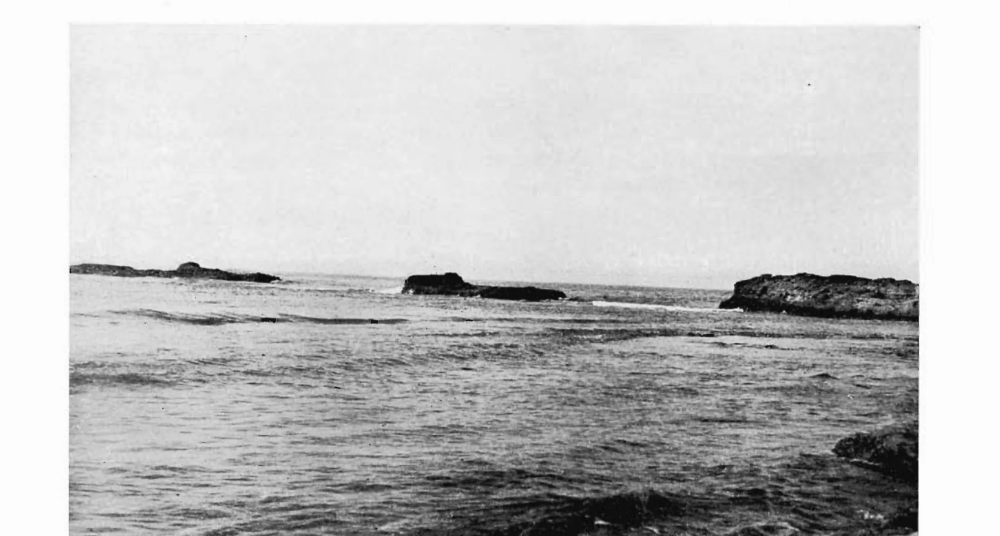
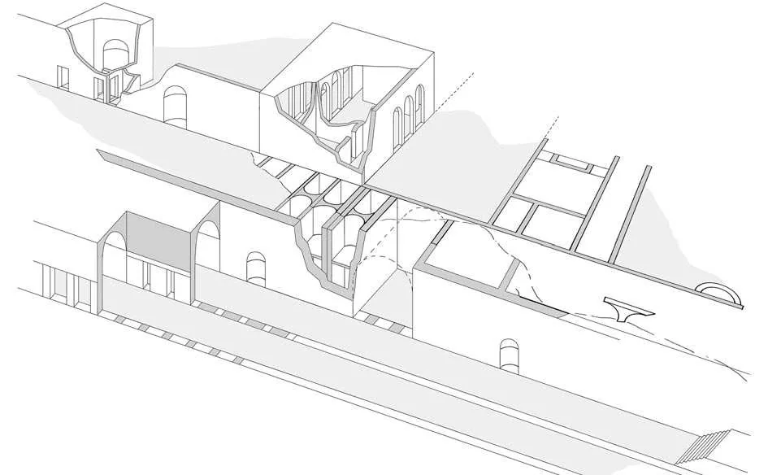
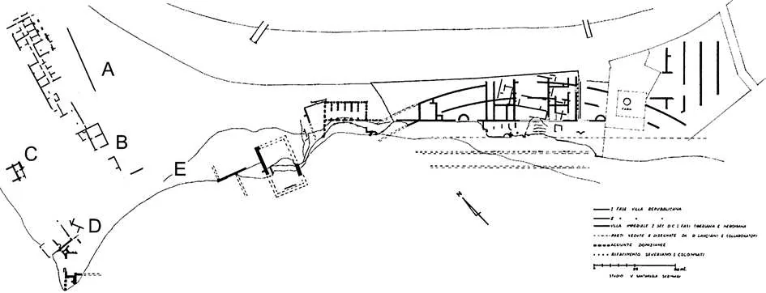
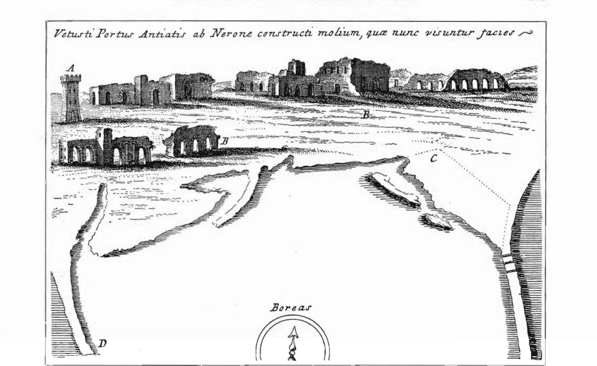

La villa dove nacquero due imperatori
Dalla domus repubblicana al palazzo di Caligola e Nerone: cinque secoli di lusso sulla costa di Antium, la Fanciulla, il Gladiatore Borghese, l'Apollo del Belvedere e la decadenza medievale.
«Nullum in Italia litus amoenius»: «Non esiste sulla costa d'Italia un luogo più ameno»
Cicerone, Epistulae ad Atticum, II, 8
Da questo pianoro di tufo che scivola nel Tirreno sono usciti, nei secoli, tre delle sculture più famose dell'antichità: la Fanciulla di Anzio, il Gladiatore Borghese e, almeno secondo la tradizione, l'Apollo del Belvedere. Su questa stessa costa nacquero due imperatori, e per quasi cinque secoli sorse la residenza al mare più ambita della famiglia imperiale. Oggi gran parte di tutto questo è sott'acqua, eroso dalle onde o sepolto sotto le case moderne. Proviamo a immaginare cos'era.
Il contesto geografico e storico
Il promontorio di Capo d'Anzio
Antium sorge su un promontorio di roccia vulcanica, il macco (un banco di tufo litoide compatto), che si protende nel Tirreno a circa 58 km a sud di Roma. La costa è caratterizzata da una falesia che scende direttamente sul mare, con una fascia di larghezza variabile tra i 60 e gli 80 metri tra il ciglio del pianoro e la battigia. Questa morfologia ha determinato per secoli sia la bellezza panoramica del sito sia le difficoltà conservative della Villa Imperiale, perennemente esposta all'erosione marina.
L'arco costiero che contiene le vestigia della Villa si estende per circa 800 metri tra la punta di Capo d'Anzio, dove oggi sorge il faro ottocentesco, e il promontorio noto come Arco Muto, demolito nel 1965. Questo limite orientale corrisponde alla sostruzione ad arco che, fino alla metà del Novecento, sopravviveva come uno dei segni più riconoscibili dell'antico paesaggio anziate.

Antium prima di Roma
Prima di diventare residenza imperiale, Antium era una delle città più potenti del Lazio meridionale. Frequentata già nell'età del ferro (con materiali databili tra il IX e il VII sec. a.C. rinvenuti nella zona di Viale Severiano), fu abitata prima dai Latini e poi dai Volsci. La cartografia aerofotografica indica la localizzazione dell'abitato protostorico sul pianoro de Le Vignacce. Scavi della Soprintendenza (1980–1981) su un tratto di mura lungo oltre 25 metri, conservato per cinque filari di blocchi, hanno permesso di datarne la costruzione all'inizio del V sec. a.C., con una fase più antica dell'aggere riferibile alla metà del VII sec. a.C.
La resa definitiva di Antium a Roma avvenne nel 338 a.C., all'esito della cosiddetta battaglia latina. In quella circostanza i Romani catturarono le navi da guerra anziate e con i loro rostra (speroni di bronzo) ornarono nel Foro Romano la tribuna degli oratori. Come sottolinea Santamaria Scrinari, la conquista «non distrugge la volsca ma, rispettandone le strutture di difesa e l'impianto urbanistico, ne potenzia la funzionalità e ne valorizza la bellezza».
Anzio capitale dell'otium romano
Dopo la conquista, Antium divenne rapidamente uno dei luoghi di villeggiatura preferiti dall'aristocrazia. La sua posizione, a meno di due giorni di carrozza da Roma, affacciata sul mare, lontana dalla calura e dai miasmi della capitale, ne fece il rifugio ideale per gli otia dell'élite senatoria. Cicerone la celebrò nelle lettere come il luogo più quieto e piacevole che conoscesse, e numerosi esponenti delle famiglie patrizie vi costruirono dimore lungo tutta la fascia costiera.
Nel 2 a.C., Augusto, che soggiornava nella villa anziate, rifiutò di ricevere una delegazione del popolo romano che voleva offrirgli il titolo di Pater Patriae: il fatto che lo storico non citi alcun ospite suggerisce che la proprietà appartenesse già alla famiglia imperiale.
Le sette fasi costruttive della Villa Imperiale
La ricostruzione scientifica dello sviluppo della Villa si deve principalmente a Vanda Santamaria Scrinari, che nel volume Mosaici antichi in Italia. Reg. I, Antium (Roma, 1975, con M.L. Morricone Matini) ha identificato sette fasi costruttive succedentisi dal II sec. a.C. al III sec. d.C. Come riporta l'Enciclopedia dell'Arte Antica della Treccani (voce Anzio, Guidi, 1994), tale edizione «offre una valida messa a punto circa la localizzazione e la planimetria dei principali monumenti di età romana, in primo luogo della grandiosa villa imperiale».
Fasi I e II · Le domus repubblicane (II sec. a.C.)
Le prime strutture risalgono al II sec. a.C.: due fasi distinte, che la Treccani (Guidi, 1994) collega ipoteticamente alla residenza del bisnonno e del nonno di Augusto. Il complesso seguiva lo schema canonico della villa suburbana patriarcale: tablino, cubicula, triclinio, orientato verso il panorama a ovest, con esedra e loggia sul mare.
Le tecniche costruttive attestate comprendono fondazioni in macco, cortina in opus incertum e in pseudoreticolato, pavimenti in opus signinum e pannelli musivi in bianco e nero per gli ambienti di rappresentanza. Le fondamenta di queste prime domus furono in gran parte obliterate da Nerone quando ricostruì il complesso su scala molto più ampia.
Fase III · Augusto e la nascita della proprietà imperiale (dal 22 a.C.)
Alla ristrutturazione augustea è attribuita la costruzione dell'elemento architettonico principale di questa fase: la grande esedra, probabilmente un portico a pilastri aperto verso il mare. Questa struttura segnava la svolta: la villa cessava di essere una somma di domus separate e diventava un organismo unitario con affaccio monumentale sul Tirreno. Su questa esedra fu impostato, nelle fasi successive, tutto lo sviluppo del complesso.
Fase IV · L'espansione giulio-claudia: Nerone e il palazzo sul mare (37–68 d.C.)

Nerone trasformò radicalmente la residenza, ricostruendola secondo nuovi canoni architettonici. La villa raggiunse un'estensione di oltre 800 metri lungo la costa. Gli interventi neroniani comprendono sostruzioni e contrafforti a nicchioni penetranti nel banco di macco, gallerie e cunicoli scavati nella roccia per il servizio e la ventilazione, lunghi corridoi e scalinate di collegamento tra il pianoro superiore e gli ambienti costruiti sul mare. Tra le opere più significative, le sostruzioni ad arco sulla falesia: le stesse sopravvissute fino al 1965 col nome romantico di Arco Muto, oggi solo un ricordo nella toponomastica.
Nerone fece costruire anche un nuovo porto circolare, opera di ingegneria tra le più ambiziose del suo tempo, che Svetonio dice costruita «con un'enorme spesa». Le ricerche di Enrico Felici hanno documentato l'impiego di cementizio pozzolanico secondo le prescrizioni vitruviane, con sigle punzonate sui legni delle casseforme originali (documenti unici della prassi costruttiva del I sec. d.C.), su una superficie portuale di circa 34 ettari.
Com'era quel porto prima che l'archeologia subacquea lo misurasse, lo racconta chi lo guardava dalla riva a metà Ottocento. Francesco Lombardi ne attribuiva il disegno a Severo o Celere, i celebri architetti dell'età di Nerone, e ne leggeva la geometria a occhio nudo: i due moli a comporre «una forma ellittica schiacciata nella base», una bocca di circa sessanta metri protetta dal molo destro e, visibile a fior d'acqua nel riflusso, la platea che reggeva il faro. Nella trasparenza dell'acqua distingueva muri sommersi che attraversavano il bacino: in quelli disposti ad angolo riconosceva forse una darsena riservata, «a somiglianza del porto Traianeo in Civitavecchia». E correggeva il Nibby, che dava al porto un circuito di due miglia: in uno scavo casuale nell'orto Mencacci erano emersi pavimenti marmorei e pietre forate per legare i canapi dei bastimenti, la prova che lo scalo antico arrivava fin lì e non oltre. All'ingresso, annotava, il fondale teneva ancora nove metri.

A chiudere due secoli di discussioni fu un'idea che nel 1938 era avveniristica: guardare il porto dall'alto. Dal Settecento i rilevatori non si erano mai messi d'accordo sulla forma dei moli: Fontana, Burri, Piale, Canina, Zeri e Lehmann-Hartleben immaginavano due bracci staccati con un antemurale nel mezzo e doppia apertura, come a Ostia e Civitavecchia; il Rasi, e con lui il Fea, sosteneva un'unica bocca, sulla scorta del rilievo accuratissimo eseguito nel 1748 dall'ingegnere Mareshal per Benedetto XIV. Lugli, che dalla barca non era riuscito a vedere nulla «quantunque in condizioni favorevoli di luce», ottenne dal Ministero dell'Aeronautica un rilievo fotogrammetrico aereo, eseguito nel settembre 1938: uno dei primi impieghi sistematici della fotografia aerea in archeologia in Italia. Il risultato fu netto: il porto neroniano aveva una sola bocca, rivolta a sud-est, larga circa 60 metri, proprio come aveva intuito il Rasi, e come Lombardi aveva letto a occhio nudo. Il molo di ponente correva quasi rettilineo per circa 850 metri; quello di levante, lungo 700, aveva in origine quattro «bocchette» per far passare le correnti ed evitare l'insabbiamento, e un marciapiede interno di 5,50 metri su cui Innocenzo XII appoggiò la sua banchina. Quanto ai muri sommersi nel bacino, Lugli propose una lettura diversa dalla darsena di Lombardi: un rimpicciolimento del porto nel primo Medioevo, quando, dopo le incursioni di Genserico (456) e l'assedio di Vitige (537), non serviva più uno specchio d'acqua di 34 ettari per le poche navi che ancora approdavano. Le due letture restano entrambe sul tavolo.
Fase V · Domiziano: il sistema idraulico e la «Biblioteca» (81–96 d.C.)
Dai bolli laterizi, i mattoni stampigliati con indicazione di fornace e periodo, è possibile attribuire a Domiziano la sistematica riorganizzazione interna della villa: sistemi di isolamento termico delle sale, canalizzazione delle acque, nuovi rivestimenti parietali. Il complesso noto tradizionalmente come «Biblioteca di Domiziano» è in realtà, come ha chiarito la ricerca moderna, una costruzione realizzata per rivestire una rientranza naturale del costone di arena: un ambiente a pianta irregolare, condizionato dalla morfologia della roccia, con volte in laterizio, affreschi pittorici e aperture verso il mare.
La denominazione di «Biblioteca» si fonda su fonti letterarie: Filostrato (Vita di Apollonio, VIII, 20), ospite di Adriano ad Anzio, celebra la bellezza della villa e ricorda le sue collezioni bibliografiche, menzionando una rarità assoluta: un libro contenente scritti di Pitagora. Negli spazi della sostruzione fu allestito un ninfeo, decorato con intonaci dipinti «del tipo a giardino» e con un grande pannello con scene di caccia.
Fase VI · Adriano: la raffinatezza del bello (117–138 d.C.)
Adriano lasciò un'impronta estetica raffinata. Le opere adrianee comprendono il restauro delle strutture neroniane e domizianee con l'aggiunta di padiglioni distaccati, realizzati in cortina laterizia di altissima qualità: sottili mattoni triangolari ben cotti e perfettamente uniformi, tecnica inconfondibile nota anche dalla Villa Adriana a Tivoli. La tradizione antiquaria, riportata ancora da Lombardi, attribuiva ad Adriano una biblioteca «copiosissima», dove si serbavano i libri di Apollonio di Tiana, e ampi granai per l'annona militare: tanto che Filostrato, ospite del principe, poté chiamare il palazzo anziate «una reggia illustre».
Gli scavi tardo-ottocenteschi portarono alla luce stanze attribuibili ad Adriano con mosaici pavimentali in intrecci di ornati e vilucchi su fondo bianco. In una sala di circa 8×8 m compaiono piccoli busti femminili ornamentali; in un altro ambiente è documentato un genio alato con cornucopia nella sinistra e una verga nella destra. Gli impianti termali adrianei comprendevano sale balnearie con condutture nelle pareti, doppio pavimento su suspensurae e ipocausto.
Fase VII · I Severi: il grande restauro monumentale (inizi III sec. d.C.)
L'ultima grande fase costruttiva, attribuita ai Severi (principalmente Settimio Severo, 193–211 d.C.), trasformò la villa in un vero palazzo imperiale. Sopra l'esedra porticata giulio-claudia fu impostato un grande atrio a otto colonne di cipollino su dadi di travertino, che introduceva a un'aula tripartita a tre navate aperta verso il mare, di proporzioni paragonabili a una basilica.
Le terme raggiunsero dimensioni grandiose, con un calidarium di grandi dimensioni, suspensurae a pilastro in laterizio e pavimento a cocciopesto. Le pareti erano rivestite di marmi policromi in decorazioni geometriche di grande effetto scenografico, tra cui il celebre marmo africano (breccia di Teos), tra i materiali più pregiati del mondo antico. In questa fase la villa raggiunse la sua massima estensione planimetrica.
La rilettura del 2008: due grandi progetti, non sette fasi
Il sito è liquido, e questa pagina lo dimostra su sé stessa. Nel 2008 Alessandro Jaia, ripartendo dall'analisi delle murature e dai documenti d'archivio, ha rimesso in discussione l'intera sequenza della Scrinari. Il punto debole era il metodo: l'opera reticolata, usata per datare le fasi, nella villa non compare negli alzati della prima età imperiale ma quasi soltanto nelle fondazioni e nelle sostruzioni, dove era un espediente costruttivo (ed economico). Tolto quel criterio, le sette fasi si riducono a due soli grandi progetti, di concezione opposta.
Il primo è la grande struttura curvilinea: non il «belvedere» di una villa, ma un'imponente passeggiata porticata autonoma, tra tarda Repubblica e prima età imperiale, che riprendeva l'andamento della costa; la residenza vera e propria stava probabilmente nell'entroterra, e non è mai stata trovata. Lungo la falesia, intanto, Jaia conta quattro domus repubblicane (al faro, alla «biblioteca», alle terme e all'Arco Muto): quella dell'Arco Muto potrebbe essere stata il nucleo originario della proprietà della famiglia Giulia o Domizia. Il secondo progetto, tra età tardo antonina e severiana, è la trasformazione in un palazzo fondato direttamente nel mare: costruzioni piantate sulla battigia, al piede della falesia, dal Semaforo alla radice del porto neroniano, per oltre 700 metri. Jaia usa un paragone che dice tutto: il risultato doveva somigliare ai palazzi veneziani, ma su un mare aperto e senza difese. Le terme si sviluppavano su quattro piani, dai magazzini a livello dell'acqua fino alla latrina e alla vasca riscaldata al piano dell'attuale strada.

La stessa ricerca ha ritrovato, all'Archivio Centrale dello Stato, i taccuini inediti di Guglielmo Gatti, che nel 1931 aveva rilevato con cura minuziosa gli scavi dell'Arco Muto. Ricollocando quei disegni sulla cartografia moderna (e verificandoli con un saggio di scavo nel 2006), la superficie nota della villa è cresciuta di circa un terzo, e i mosaici oggi al Museo Nazionale Romano, compreso il grande Ercole e Acheloo, hanno ritrovato il punto esatto da cui provenivano. Le due letture, Scrinari e Jaia, restano qui una accanto all'altra: è il modo in cui questa guida tratta le correzioni.

Ambienti e strutture del complesso
Il porticato curvilineo sul mare
Tra la fine del I sec. a.C. e la prima metà del I sec. d.C., le domus private vengono sostituite da un lungo porticato curvilineo che abbraccia l'intero arco costiero. Questa struttura segnò il passaggio dell'intera area in proprietà esclusivamente imperiale, garantendo un passaggio coperto e panoramico lungo tutta la fronte costiera con veduta sul golfo e sulla linea dei Colli Albani.
Il criptoportico
Il criptoportico, una galleria voltata semiinterrata, assolveva a molteplici funzioni: circolazione coperta al riparo dal sole estivo, deposito, sistema di ventilazione e passaggio di servizio tra le diverse parti del complesso. Alcuni suoi ambienti, per la qualità degli affreschi conservati, potrebbero aver avuto funzione di diaeta (soggiorno estivo).
Le terme
L'impianto termale è documentato in più fasi successive, da quella adrianea a quella severiana. La sequenza canonica comprendeva frigidarium, tepidarium, calidarium e laconicum. La versione severiana amplificò enormemente l'impianto, con strutture paragonabili alle grandi terme pubbliche romane.
Calcedonio Soffredini (Storia di Anzio, 1879), che visitò personalmente i resti ancora visibili intorno al 1845, descrive corridoi con volte a cassettoni di stucco «con fogliami e rosoni nel centro», e bagni dotati di «sedili per giacervi» e di «chiavi o incastri per immettere o vietare le acque del mare»: un sistema idraulico che regolava la circolazione dell'acqua salata nelle vasche. Mezzo miglio a levante, un edificio termale a metà strada tra Anzio e Nettuno mostrava ancora «la volta di una essedra crollata sul pavimento, tessuta a cassettoni romboidali con stucchi, abbellita di mosaico e di conchiglie», già allora parzialmente diruto.
Il teatro
Un'iscrizione marmorea rinvenuta nel 1711 attesta la presenza di un teatro annesso al complesso, identificato nella zona di Santa Teresa, risalente alla metà del I sec. d.C. La presenza di un teatro privato non sorprende: le ville imperiali di lusso includevano spazi per rappresentazioni, recitazioni e concerti privati: funzioni particolarmente care a Nerone.
C'era però anche un secondo «teatro», quello disegnato da Bianchini presso la costa, sopra una terrazza artificiale a grandi voltoni: e su questo Lugli avanzò un dubbio rimasto in piedi. Nel disegno settecentesco la cavea era già tutta distrutta, la scena aveva «una forma assai strana» con avancorpi e stanze absidate simili a padiglioni; nei voltoni si lessero bolli laterizi delle figline Domiziane fabbricati sotto Settimio Severo e Caracalla. Per Lugli non era un teatro, ma piuttosto una diaeta: una di quelle terrazze di soggiorno «in parte scoperte e in parte coperte, con portici e fontane», dove si viveva all'aria aperta godendo il panorama. Anche la scena superstite cadde verso la metà dell'Ottocento: oggi non ne resta più nulla.
I grandi ritrovamenti
La fama della villa imperiale fece sì che anche le ville private continuassero a essere curate e ampliate. Le dimore sulla costa di levante sono documentate sotto le abitazioni moderne lungo la strada Anzio-Nettuno e nel parco comunale di Villa Adele (l'antica Villa Cesi, poi Pamphilj, poi Borghese, poi Aldobrandini). Fu in quest'area che, nell'arco di quattro secoli, emersero alcuni dei capolavori più famosi del mondo antico.
La Fanciulla di Anzio (1878)

La notte del 23 dicembre 1878 una mareggiata insolitamente violenta fece crollare un muro della Villa Imperiale, portando alla luce la scultura. Come documenta il catalogo scientifico Museo Nazionale Romano. Le sculture (Giuliano ed., I, 8, Roma 1985), la statua fu rinvenuta in una nicchia del doppio porticato affacciato sul mare. Jaia ha precisato il contesto: uno dei due grandi nicchioni ai lati del vano riscaldato del criptoportico, dove insieme alla Fanciulla fu trovata anche un'Artemide, poi andata dispersa. L'opera, acquistata dallo Stato italiano nel 1908 grazie a un apposito voto del Parlamento (al costo di 450.000 lire, dopo una campagna pubblica sostenuta dallo scultore Leonardo Bistolfi), è conservata al Museo Nazionale Romano di Palazzo Massimo alle Terme a Roma.
La scultura, alta 170 cm, è realizzata con due marmi greci distinti: il pario per la spalla nuda e il pentelico per le vesti: una scelta tecnica che rivela una cura rara per la resa differenziata delle superfici. La giovane donna avanza portando un vassoio con oggetti rituali: un volumen semiaperto, un ramo d'alloro sacro ad Apollo e un oggetto di cui rimangono solo due piedi a forma di zampa felina; ha arrotolato il mantello in vita per non inciampare.
L'identificazione rimane aperta: le principali ipotesi comprendono una sacerdotessa dionisiaca, la Pizia delfica o una promantis di un santuario di Apollo. Il prof. Cellini (Studi Urbinati, LVI, 1983) ha avanzato una proposta interpretativa specifica citata dalla Treccani. La scultura è considerata opera originale ellenistica, non copia, probabilmente del III sec. a.C., accostata da alcuni studiosi alla cerchia di Doidalsa.
Il Gladiatore Borghese (rinvenuto c. 1609)

Come la descrive l'Enciclopedia dell'Arte Antica Treccani, il Gladiatore Borghese è una «celebrata statua marmorea di guerriero (m 1,55) erroneamente interpretata come un gladiatore, rinvenuta presso Anzio sotto il pontificato di Paolo V (1605–1621)». Portato alla luce in diciassette frammenti, fu restaurato nel 1611 da Nicolas Cordier. L'opera, firmata dallo scultore Agasia figlio di Dositeo di Efeso, è databile intorno al 100 a.C. Entrò nella Collezione Borghese e fu venduta nel 1808 dal principe Camillo Borghese al cognato Napoleone Bonaparte insieme all'intera raccolta. È oggi al Musée du Louvre di Parigi.
La firma incisa sulla base in greco recita: ΑΓΑΣΙΑΣ ΔΩΣΙΘΕΟΥ ΕΦΕΣΙΟΣ ΕΠΟΙΕΙ: «Mi fece Agasia, figlio di Dositeo, efesino». La Treccani descrive l'opera come «inquadrabile in una fase classicistica dell'ellenismo ove gli estremi portati degli ammaestramento lisippei sono rivissuti secondo moduli virtuosistici». Per Della Seta (Il nudo nell'arte, 1930) risalirebbe a un originale bronzeo del III–II sec. a.C. di cui Agasia sarebbe il copista.
L'Apollo del Belvedere (ritrovato fine XV sec.)

La statua fu, riporta la Treccani, «trovata, secondo quanto dice Pirro Ligorio, ad Anzio, alla fine del XV secolo; custodita dapprima nel giardino del palazzo del cardinale Giuliano della Rovere, presso S. Pietro in Vincoli, fu poi, quando questi divenne papa col nome di Giulio II, trasportata al Belvedere del Vaticano, ove si trova tuttora». L'opera è una copia romana di età imperiale (I–II sec. d.C.), che la Treccani definisce «piuttosto fredda e classicista», da un originale greco comunemente attribuito a Leocare. Fu restaurata da Giovanni Angelo Montorsoli. Winckelmann la definì «il più alto ideale dell'arte fra tutte le opere antiche».
Il Ninfeo di Ercole (rinvenuto 1930)
Rinvenuto nel 1930 durante gli scavi a Villa Corsini Sarsina, il Ninfeo di Ercole è riferibile all'età neroniana (I sec. d.C.) ed è pertinente a un luogo sacro dedicato a Ercole nell'area dell'acropoli di Antium. Le sue ridotte dimensioni (2,34 × 2,89 m) e la ricchezza decorativa ne fanno uno dei reperti più significativi del sito: combina travertino, marmo bianco e marmi policromi, paste vitree colorate per le tessere musivali, pietra pomice per le superfici ruvide tipiche dei ninfei, e conchiglie per le decorazioni naturalistiche. Lugli ne registra il rinvenimento «nei lavori di ampliamento della grotta» nella proprietà Mazza, a ponente dell'emiciclo: l'edicola era scavata nella roccia, ai piedi del taglio che da quella parte formava la fortificazione della città, e fu portata al primo piano del chiostro michelangiolesco del Museo delle Terme a Roma. Oggi è tornata a casa: è conservata al Museo Civico Archeologico di Anzio, Villa Adele.
Tavola riassuntiva dei capolavori di Antium
| Opera | Datazione | Ritrovamento | Sede attuale verificata |
|---|---|---|---|
| Apollo del Belvedere | Copia romana I–II sec. d.C. da originale greco (Leocare?) | Anzio?, fine XV sec. (fonte: Pirro Ligorio; provenienza non certa) | Musei Vaticani, Cortile del Belvedere |
| Gladiatore Borghese | c. 100 a.C. (Agasia di Efeso) | Anzio, c. 1609, pontificato Paolo V | Musée du Louvre, Parigi |
| Fanciulla di Anzio | Originale ellenistico, III sec. a.C. | Villa Imperiale, Anzio, 23 dic. 1878 | Museo Nazionale Romano, Palazzo Massimo, Roma |
| Ninfeo di Ercole | Età neroniana, I sec. d.C. | Villa Corsini Sarsina, Anzio, 1930 | Museo Civico Archeologico, Villa Adele, Anzio |
| Mosaici e affreschi dalla villa | I–III sec. d.C. | Scavi Novecento sulla costa | Museo Civico Archeologico, Villa Adele, Anzio |
| Statuetta Fortuna Anziate | Età imperiale | Villa Spigarelli | Villa Spigarelli (proprietà privata, non accessibile) |
Il culto della Fortuna Anziatina
«O Diva, gratum quae regis Antium»: «O dea, che governi la graziosa Antium»
Orazio, Carmina, I, 35, 1
Il Tempio della Fortuna Anziatina è intimamente legato alla storia della villa imperiale. Il culto risale a età antichissima, e la divinità protettrice di Antium aveva un santuario celebrato in tutto l'Impero per il suo oracolo, consultato da imperatori e personaggi illustri. La Fortuna Anziatina aveva una doppia valenza agraria e marinara, quest'ultima preponderante per una città di mare: le monete del monetiere Rustius la raffigurano con il timone di una nave. Caligola vi si recò prima di essere assassinato.
I Fasti e il collegium giulio-claudio
La decadenza e il Medioevo
Ancora nel 380–382 d.C. Antium era abbastanza prospera da ottenere un intervento statale per la ricostruzione delle terme pubbliche, documentato da un'iscrizione che attesta il restauro da parte del proconsole della Campania Anicio Augenio Basso. Ma dopo questa data il declino fu inarrestabile: piraterie, malaria, insabbiamento del porto, la cui ultima attività commerciale documentata risale, secondo Procopio, al 537 d.C., trasformarono la splendida residenza imperiale in un borgo desolato.

Le testimonianze raccolte da Lombardi danno corpo a quella lunga agonia. L'ultimo imperatore di cui si ricordasse il legame con Anzio era Costantino, che donò alla Basilica Lateranense i molti poderi posseduti nell'agro anziate. La città cristiana ebbe però i suoi vescovi: un Gaudenzio sottoscrisse nel 465 il concilio di papa Ilario, un Felice partecipò al sinodo romano del 487, un Vindemio ai due sinodi del 499 e del 501: segno che tra V e VI secolo Antium era ancora una comunità viva. Poi, tra VIII e IX secolo, le incursioni saracene: Lombardi leggeva «la sofferta azione del fuoco» nei frammenti di marmo che ancora affioravano, e raccontava che gli ultimi abitanti, abbandonata «la città ormai inabitabile», ripararono in parte nell'entroterra e in parte si fortificarono nel vicino tempio di Nettuno, dando origine, secondo la tradizione, al paese che ne porta il nome.
Dopo aver appartenuto alle terre di San Pietro, Anzio divenne proprietà dei Frangipane nel XIII secolo, potente famiglia romana che controllava gran parte del Lazio costiero. Successivamente passò ai Colonna. Nel 1594 Marcantonio Colonna vendette la città per 400.000 scudi alla Camera Apostolica. Da quel momento, con il rinnovato gusto per la villa suburbana, Anzio tornò a essere città satellite della corte romana.
Le ville cardinalizie: una mappa delle successioni
| Villa oggi | Origine e successione proprietaria | Importanza archeologica | Uso attuale |
|---|---|---|---|
| Villa Sarsina / Municipio | Cardinal Nereo Corsini (villa e palazzo del 1743, dove ospitò Benedetto XIV) → famiglia Mencacci (vendita del 1820) → principi di Sarsina | Area del ritrovamento della Fanciulla (1878); Ninfeo di Ercole (1930) | Sede del Municipio di Anzio |
| Villa Albani | Cardinal Alessandro Albani (palazzo del 1735, col motto Amicis et genio sulla porta del viale) → Camera Apostolica (Ospizio Marino) | Probabile area del Tempio della Fortuna | Struttura ospedaliera e sede ASL |
| Villa Adele (già Villa Pia) | Villa Cesi → Pamphilj (il casino, per Lombardi, su «vago disegno del Vignola») → Borghese → Aldobrandini → P.O.A. | Area degli scavi del Gladiatore (1609) e di strutture medio-repubblicane (Jaia 2021–22) | Sede comunale e Museo Civico Archeologico |
| Villa «di bello aspetto» (Costaguti), verso Nettuno | Cardinali Vincenzo e Giambattista Costaguti (XVII sec.) → Torlonia → Borghese (1831) | Sorge sulla fascia delle ville romane di levante | Proprietà privata (Villa Borghese) |
Il porto nuovo di Innocenzo XII e la scelta sbagliata
Il ritorno della corte romana culminò nel cantiere del porto Innocenziano. Nel 1698 Innocenzo XII, deciso a dare un porto a una costa famigerata per i naufragi, venne a giudicare di persona i progetti: la relazione manoscritta del viaggio, conservata nella Biblioteca Chigiana, descrive il ricevimento favoloso allestito dai Borghese nel latifondo di Carroceto (un palazzo di legno parato di damaschi cremisi, un anfiteatro di alloggi per il seguito, mangiatoie per seicento cavalli), dove il papa, compiaciuto, firmò perfino una dispensa datata «Datum in Villa Borghesiana Carroceti». Sul tavolo c'erano due progetti: l'architetto Carlo Fontana proponeva «saviamente», scrive Lombardi, di riusare il seno formato dal molo destro del porto Neroniano; Alessandro Zinaghi prometteva un molo tutto nuovo per soli quindicimila scudi. Spaventato dal costo del restauro delle «gigantesche braccia» antiche, il papa scelse Zinaghi: per Lombardi fu «la mal'augurata formazione del nuovo porto», che costò il doppio del previsto e che in centoquarantasei anni di spurghi aveva già inghiottito «meglio che due milioni di scudi» senza vincere la sabbia. Da figlio di Anzio, Lombardi chiudeva i suoi Cenni con un appello: o restaurare il porto Neroniano, o rassegnarsi a vedere Anzio «rientrare nel suo nulla per la seconda volta». La storia gli ha dato torto solo a metà: il porto moderno vive, ma la lotta con l'insabbiamento non è mai finita.
Storia delle ricerche
Le indagini ottocentesche
Una prima descrizione organica a stampa delle rovine si deve a Francesco Lombardi (1847), che registrò strutture e dettagli oggi scomparsi: dall'esedra stuccata alle camere dipinte crollate sotto i suoi occhi. I primi studi sistematici si devono poi a Rodolfo Lanciani, che documentò le rovine della villa con annotazioni topografiche conservate nel Codice Vaticano Latino 13045, pp. 270–271. A Giuseppe Lugli si deve il Saggio sulla Topografia dell'Antica Antium (Rivista del R. Istituto d'Archeologia e Storia dell'Arte, VII, Roma 1940, pp. 153–188).
Gli scavi 1930–1931
Le campagne degli anni 1930–1931 rappresentano il più significativo intervento sistematico del Novecento. Portarono alla luce ambienti, pavimenti musivi, elementi architettonici e reperti fondamentali tra cui il Ninfeo di Ercole. Santamaria Scrinari avvertiva già negli anni '70 che quanto restava visibile era «molto meno di quanto lasciarono gli scavi del 1930–1931 e videro la Van Buren, la Blake ed il Lugli stesso».
Il Progetto Antium · Sapienza Università di Roma (1998–oggi)
Il Progetto Antium è attivo dal 1998 su convenzione con il Comune di Anzio, con direzione scientifica di Alessandro M. Jaia (Dipartimento di Scienze dell'Antichità, Sapienza). Le campagne di scavo 2021–2022 nell'area di Villa Adele hanno permesso di identificare strutture databili tra l'età medio-repubblicana e la piena età imperiale, riferibili alle fortificazioni della città e a sostruzioni di residenze private (Jaia, in Lazio e Sabina 13, Soprintendenza ABAP, 2024, pp. 357–364). Nel 2024 nuove ricerche sugli arredi scultorei delle ville di Antium sono state pubblicate nel volume Tredicesimo Incontro di Studi sul Lazio e la Sabina.
L'archeologia subacquea del porto
Le indagini di Enrico Felici hanno documentato la topografia precisa dei due moli, i metodi costruttivi basati sul cementizio pozzolanico secondo Vitruvio, e la presenza di sigle punzonate sui legni delle casseforme: documenti unici della prassi ingegneristica del I sec. d.C. sul Tirreno.
Dopo decenni di abbandono, l'area monumentale della villa è stata riaperta al pubblico nel 2001 come parco archeologico, con i fondi del Giubileo; lo stato di apertura attuale va verificato presso il Comune o il Museo Civico.
Ottocento metri di palazzo a picco sul mare, due imperatori venuti al mondo qui, statue che oggi sono al Louvre, in Vaticano e a Palazzo Massimo. Della villa più bella del Tirreno restano pochi muri, che il mare continua a mangiare. Vale la pena affacciarsi dal pianoro di Santa Teresa prima che anche quelli se ne vadano.